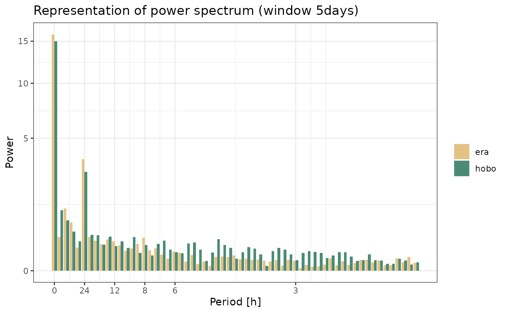
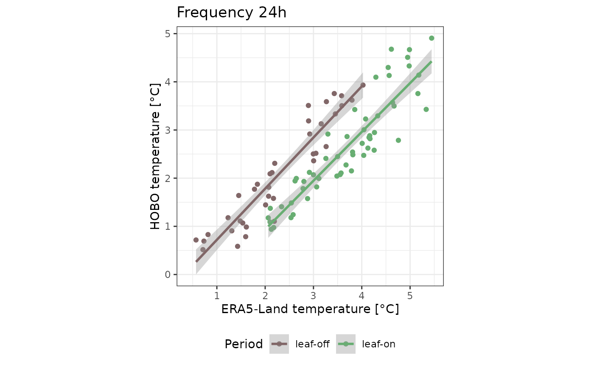
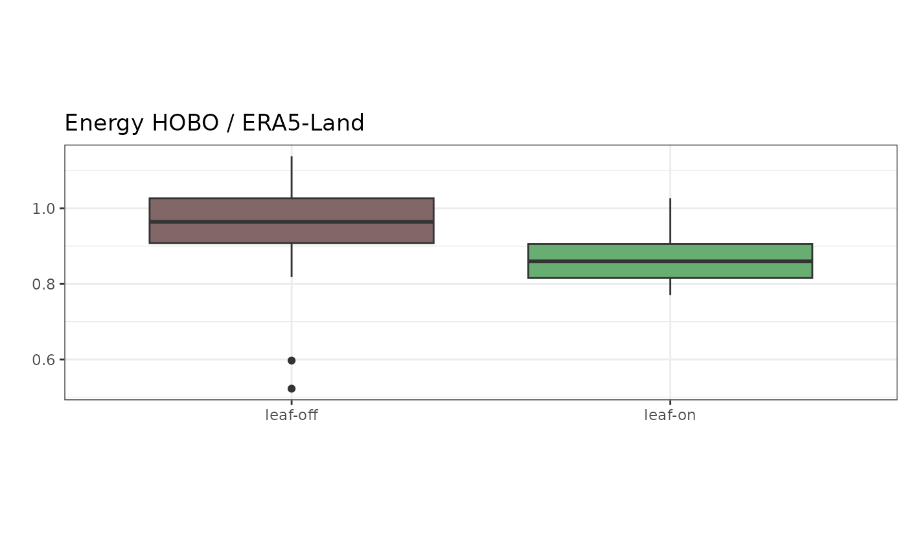

library(microclimr)
library(dplyr)
library(lubridate)
library(tidyr)
library(ggplot2)
library(runner)Data load
data <- era %>%
rename(era = tas, datetime = time) %>%
select(datetime, era) %>%
left_join(select(hobo, datetime, t_hobo) %>%
rename(hobo = t_hobo))
#> Joining with `by = join_by(datetime)`Data check
Check hours that are lacking
for (i in 1:(nrow(data) - 1)) {
if (data$datetime[i + 1] - data$datetime[i] > as.difftime(1, units = "hours")) { # nolint
print(i)
}
}Here is a problem at summer time? To discuss!
print(data[2015:2020, ])
#> # A tibble: 6 × 3
#> datetime era hobo
#> <dttm> <dbl> <dbl>
#> 1 2023-03-25 22:00:00 7.79 7.58
#> 2 2023-03-25 23:00:00 7.16 7.38
#> 3 2023-03-26 00:00:00 7.21 7.28
#> 4 2023-03-26 01:00:00 7.22 7.28
#> 5 2023-03-26 02:00:00 7.04 NA
#> 6 2023-03-26 03:00:00 6.90 7.48After correction:
data$datetime[2019] <- data$datetime[2019] - as.difftime(1, units = "hours")
print(data[2015:2020, ])
#> # A tibble: 6 × 3
#> datetime era hobo
#> <dttm> <dbl> <dbl>
#> 1 2023-03-25 22:00:00 7.79 7.58
#> 2 2023-03-25 23:00:00 7.16 7.38
#> 3 2023-03-26 00:00:00 7.21 7.28
#> 4 2023-03-26 01:00:00 7.22 7.28
#> 5 2023-03-26 01:00:00 7.04 NA
#> 6 2023-03-26 03:00:00 6.90 7.48Here is lacking 10 hours:
data[6920:6927, ]
#> # A tibble: 8 × 3
#> datetime era hobo
#> <dttm> <dbl> <dbl>
#> 1 2023-10-16 06:00:00 3.81 4.10
#> 2 2023-10-16 07:00:00 3.47 4.42
#> 3 2023-10-16 08:00:00 5.15 4.73
#> 4 2023-10-16 09:00:00 7.25 5.86
#> 5 2023-10-16 10:00:00 8.97 7.88
#> 6 2023-10-16 11:00:00 9.99 9.28
#> 7 2023-10-16 12:00:00 10.6 9.96
#> 8 2023-10-16 13:00:00 11.0 NAFFT
Decomposition of Fourier coefficients on 5 days.
n <- 5 * 24
date1 <- as_datetime("2023-07-02 00:00:00")
date2 <- as_datetime("2023-07-06 23:00:00")
data %>%
filter(
datetime >= date1,
datetime <= date2
) %>%
group_by(source) %>%
summarise(power = fft_powers(fft_rfft(temperature))) %>%
mutate(period = fft_freq(n, n)) %>%
ggplot(aes(period, power, fill = source)) +
geom_col(position = "dodge") +
theme_bw() +
ggtitle("Representation of power spectrum (window 5days)") +
xlab("Period [h]") +
ylab("Power") +
scale_x_continuous(
breaks = c(0, 1 / 24, 1 / 12, 1 / 8, 1 / 6, 1 / 3),
labels = c("0", "24", "12", "8", "6", "3")
) +
scale_fill_manual("", values = c("#e4c284", "#4a8b76")) +
theme(legend.position = c(0.8, 0.8))
#> Warning: Returning more (or less) than 1 row per `summarise()` group was deprecated in
#> dplyr 1.1.0.
#> ℹ Please use `reframe()` instead.
#> ℹ When switching from `summarise()` to `reframe()`, remember that `reframe()`
#> always returns an ungrouped data frame and adjust accordingly.
#> Call `lifecycle::last_lifecycle_warnings()` to see where this warning was
#> generated.
#> `summarise()` has grouped output by 'source'. You can override using the
#> `.groups` argument.
Decomposition of Fourier coefficients using a sliding window with
runner.
fc_all <- data %>%
group_by(source, season) %>%
summarise(
data = runner(
x = .,
k = "5 days",
at = seq(min(.$datetime),
max(.$datetime),
by = "3 days"
),
idx = "datetime",
f = function(x) {
if (nrow(x) == 5 * 24) {
tibble(
date = mean(x$datetime) %>% as_date(),
freq = c(0, fft_freq(n, n)),
fc = fft_rfft(x$temperature),
)
}
},
na_pad = TRUE
)
) %>%
filter(!is.na(data)) %>%
unnest(data)
#> Warning: Returning more (or less) than 1 row per `summarise()` group was deprecated in
#> dplyr 1.1.0.
#> ℹ Please use `reframe()` instead.
#> ℹ When switching from `summarise()` to `reframe()`, remember that `reframe()`
#> always returns an ungrouped data frame and adjust accordingly.
#> Call `lifecycle::last_lifecycle_warnings()` to see where this warning was
#> generated.
#> `summarise()` has grouped output by 'source', 'season'. You can override using
#> the `.groups` argument.Usage example. The 0 frequency is the mean!
fc_all %>%
group_by(source, season, date) %>%
summarise(mean_temperature = fft_mean(fc)) %>%
pivot_wider(names_from = source, values_from = mean_temperature) %>%
ggplot(aes(era, hobo, col = season)) +
geom_point() +
geom_smooth() +
theme_bw() +
scale_color_manual("Period", values = c("#816768", "#68ae72")) +
xlab("ERA5-Land temperature [°C]") +
ylab("HOBO temperature [°C]") +
coord_equal() +
theme(legend.position = "bottom") +
ggtitle("Mean temperature")
#> `summarise()` has grouped output by 'source', 'season'. You can override using
#> the `.groups` argument.
#> `geom_smooth()` using method = 'loess' and formula = 'y ~ x'
#> Warning: Removed 24 rows containing non-finite outside the scale range
#> (`stat_smooth()`).
#> Warning: Removed 24 rows containing missing values or values outside the scale range
#> (`geom_point()`).The 5 frequency is the period 24:
fc_all %>%
group_by(source, season, date) %>%
summarise(power = fft_powers(fc)[5]) %>%
pivot_wider(names_from = source, values_from = power) %>%
ggplot(aes(era, hobo, col = season)) +
geom_point() +
geom_smooth(method = "lm") +
theme_bw() +
scale_color_manual("Period", values = c("#816768", "#68ae72")) +
xlab("ERA5-Land temperature [°C]") +
ylab("HOBO temperature [°C]") +
coord_equal() +
theme(legend.position = "bottom") +
ggtitle("Frequency 24h")
#> `summarise()` has grouped output by 'source', 'season'. You can override using
#> the `.groups` argument.
#> `geom_smooth()` using formula = 'y ~ x'
#> Warning: Removed 24 rows containing non-finite outside the scale range
#> (`stat_smooth()`).
#> Warning: Removed 24 rows containing missing values or values outside the scale range
#> (`geom_point()`).
This is the second function which return variance over a period or energy dissipation
fc_all %>%
group_by(source, season, date) %>%
summarise(energy = fft_energy(fc)) %>%
pivot_wider(names_from = source, values_from = energy) %>%
ggplot(aes(era, hobo, col = season)) +
geom_point() +
geom_smooth(method = "lm") +
theme_bw() +
scale_color_manual("Period", values = c("#816768", "#68ae72")) +
xlab("ERA5-Land energy") +
ylab("HOBO energy") +
coord_equal() +
theme(legend.position = "bottom") +
ggtitle("Energy")
#> `summarise()` has grouped output by 'source', 'season'. You can override using
#> the `.groups` argument.
#> `geom_smooth()` using formula = 'y ~ x'
#> Warning: Removed 24 rows containing non-finite outside the scale range
#> (`stat_smooth()`).
#> Warning: Removed 24 rows containing missing values or values outside the scale range
#> (`geom_point()`).
fc_all %>%
group_by(source, season, date) %>%
summarise(energy = fft_energy(fc)) %>%
pivot_wider(names_from = source, values_from = energy) %>%
ggplot(aes(season, hobo / era, fill = season)) +
geom_boxplot() +
theme_bw() +
scale_fill_manual(guide = "none", values = c("#816768", "#68ae72")) +
ylab("") +
xlab("") +
coord_equal() +
theme(legend.position = "bottom") +
ggtitle("Energy HOBO / ERA5-Land")
#> `summarise()` has grouped output by 'source', 'season'. You can override using
#> the `.groups` argument.
#> Warning: Removed 24 rows containing non-finite outside the scale range
#> (`stat_boxplot()`).